Arquitectura y construcción · CDMX y Morelos
Diseñamos, construimos y remodelamos.
Vivienda, conjuntos habitacionales, hospedaje, salud, urbanización y obra pública: del anteproyecto a la entrega de la obra, con supervisión en sitio y reporte de avance para cada cliente.

- Zona de trabajoCiudad de México, Morelos, Estado de México y Tlaxcala
- AlcanceDel anteproyecto a la entrega
- SeguimientoBitácora y reporte fotográfico en cada obra
Obras
Obras y proyectos
Una selección de trabajos en vivienda, hospedaje, salud, obra pública, urbanización y proyectos de diseño. Abra cada obra para ver el proceso y el resultado.
- 01 Albergue Alpino Ajusco
-
02
Casa SU-03

-
03
Casa AJ8

-
04
Hotel Casa Fernanda

-
05
Casa Atlamaya

-
06
Verificentro Gobernadores

-
07
Casa Pedregal
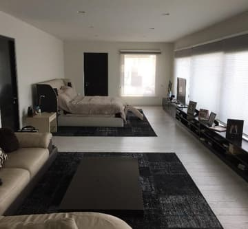
-
08
Hospital de la Mujer
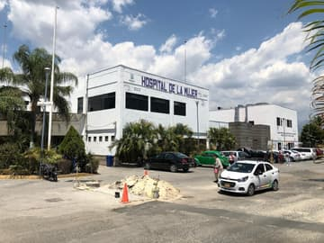
-
09
Hospital General de Temixco
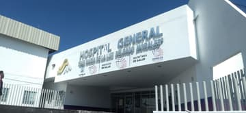
-
10
Calle 5 de Mayo
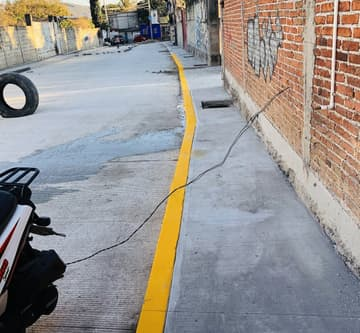
-
11
Jardín Juárez
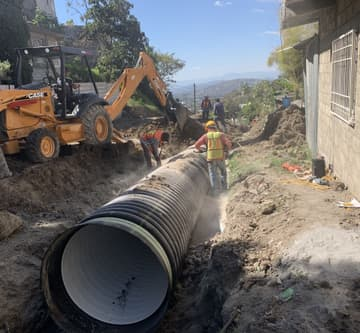
-
12
Las Torres
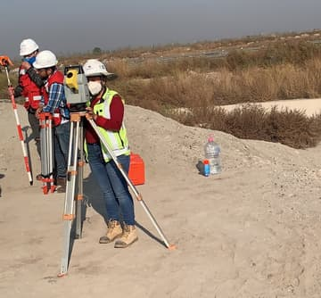
-
13
Sanofi · Proyecto Azteca

-
14
Loligas

-
15
Hotel Boutique Club 51
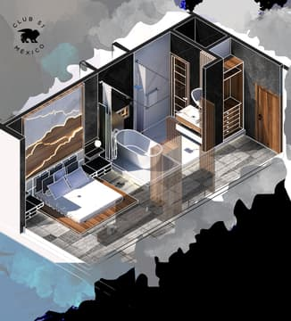
-
16
Conjunto habitacional Tecuezcontitla

-
17
Condominios y departamentos

-
18
Usos mixtos, corporativo y salud


Servicios
Lo que hacemos
Cuatro líneas de trabajo que pueden contratarse juntas o por separado, para obra nueva o para un espacio que ya existe.
- 01
Diseño arquitectónico
Proyecto arquitectónico y de interiores para obra nueva o remodelación, del anteproyecto al proyecto ejecutivo.
- 02
Construcción
Ejecución de obra con supervisión técnica y control de calidad, de la obra negra a los acabados.
- 03
Remodelación y rehabilitación
Renovación integral o parcial de casas, comercios y edificios públicos: demolición, obra nueva y acabados.
- 04
Interiores y acabados
Diseño interior, acabados y carpintería para estancias, recámaras, baños, cocinas y áreas de hospedaje.
Mayor escala
Conjuntos, condominios y urbanización
Cuatro líneas de trabajo para desarrollos habitacionales y obra de mayor escala.
- 05
Conjuntos habitacionales
Proyecto y construcción de vivienda en conjunto, con edificación en serie y obra por etapas.
Ver Conjunto Tecuezcontitla Albergue Alpino Ajusco (32 cabañas)
- 06
Condominios y departamentos
Proyecto arquitectónico de edificios de departamentos, privadas residenciales y usos mixtos.
Ver Condominios y departamentos Usos mixtos, corporativo y salud
- 07
Urbanización
Pavimentos de concreto hidráulico, guarniciones, banquetas y redes de drenaje sanitario.
- 08
Terracerías y obra civil
Demoliciones, plataformas, excavaciones y cimentaciones con maquinaria pesada y control de seguridad.
Ecotecnologías que integramos
Se definen en la etapa de proyecto, según el terreno y las necesidades de cada cliente.
- Muros verdes y huertosVegetación integrada a la construcción; aísla del ruido y del calor.
- Energía fotovoltaicaPaneles solares con inversor y baterías para uso doméstico.
- Aguas negrasFosa séptica y humedal que filtran el agua para reutilizarla en riego.
- Aguas grisesBiojardinera que limpia el agua de regaderas y lavabos.
- Captación pluvialSepara las primeras lluvias y almacena agua limpia en cisterna.
- Calentador solarTubos al vacío y termotanque para agua caliente sin gas.
- Biodigestor de grasasFiltra el agua de la tarja de cocina para su reúso.
- Bici-bomba de aguaBombeo accionado por bicicleta, sin consumo eléctrico.
Renta de equipo
Renta de generadores
Contamos con generadores eléctricos en renta para obras, eventos y trabajos en sitios sin suministro de energía.
Renta sujeta a disponibilidad. La cotización se realiza de acuerdo con el equipo y el periodo de renta.
Solicitar cotización por WhatsApp- 900 WGenerador HuskyPotencia máxima2 equipos
- 3000 WGenerador Foreman3 equipos
- 4000 WGenerador1 equipo
- 5000 WGenerador1 equipo
Cómo trabajamos
Del proyecto a la entrega
Cuatro etapas claras, para que usted sepa qué esperar en cada momento.
- 01
Diagnóstico
Visita al sitio, levantamiento y definición de necesidades, alcance y presupuesto.
- 02
Proyecto
Propuesta de diseño, proyecto ejecutivo y cotización detallada por partidas.
- 03
Construcción
Ejecución de la obra con supervisión en sitio, control de calidad y reportes de avance.
- 04
Entrega
Espacios terminados, limpieza final y recorrido de entrega con el cliente.

Durante la obra, el avance se documenta con bitácora y reporte fotográfico para el cliente.
Nosotros
Quiénes somos
ADCO Arquitectos desarrolla proyectos de arquitectura, diseño, construcción y remodelación, así como urbanización y obra civil, para clientes particulares, empresas y el sector público, del anteproyecto a la entrega de la obra.
Misión
Generar un impacto social mediante nuestros procesos de gestión y operación, promoviendo el desarrollo integral de nuestros trabajadores y la búsqueda permanente de la excelencia a través de la innovación.
Visión
Ser reconocidos como una empresa líder en construcción, con un equipo unido, comprometido con la innovación, la calidad y los entornos de trabajo seguros.
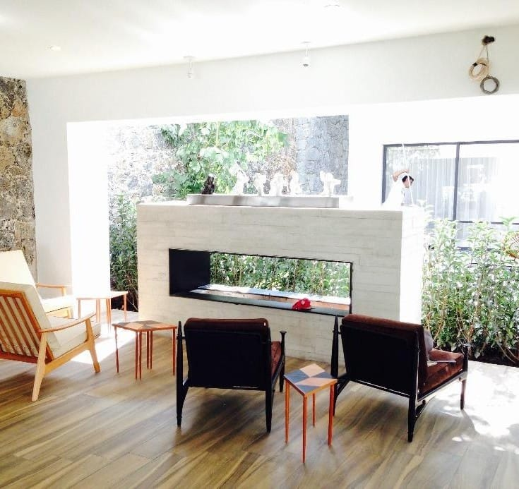
Sociedades
Empresas con las que ADCO trabaja en sociedad para obras de mayor escala.
-
Querétaro
ASOINCO
Asesoría en Ingeniería de Construcción, S.C.
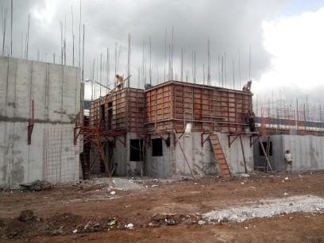
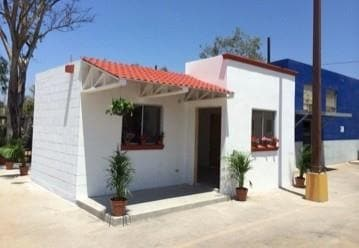


Edificación con cimbra metálica, prototipo de vivienda y vialidades.
-
Puebla
SEDIS Construcciones
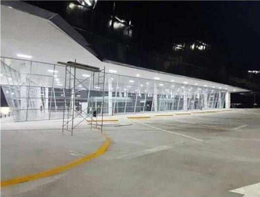
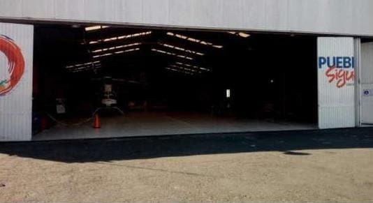
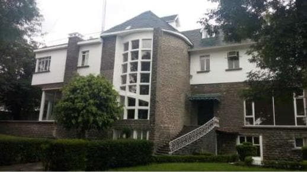
Hangares, pavimentos y obra residencial.
-
Ciudad de México
Grupo Constructor EJA
Grupo Constructor EJA, S.A. de C.V.
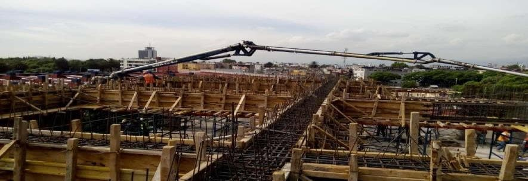
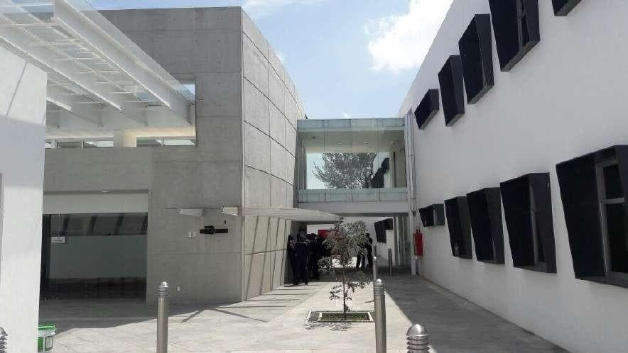
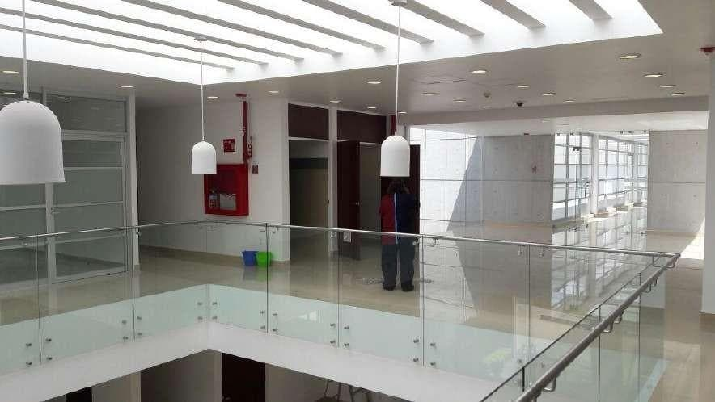
Cimentaciones y edificación institucional: Tribunal Superior de Justicia.
Contacto
Conversemos sobre su proyecto
Escríbanos para agendar una visita o solicitar una cotización.
- (777) 511-42-67
- Oficina
- Prolongación Miguel Hidalgo 198, Col. Chamilpa, C.P. 62210, Cuernavaca, Morelos
- Zona de trabajo
- Ciudad de México, Morelos, Estado de México y Tlaxcala